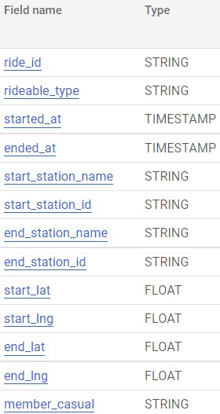
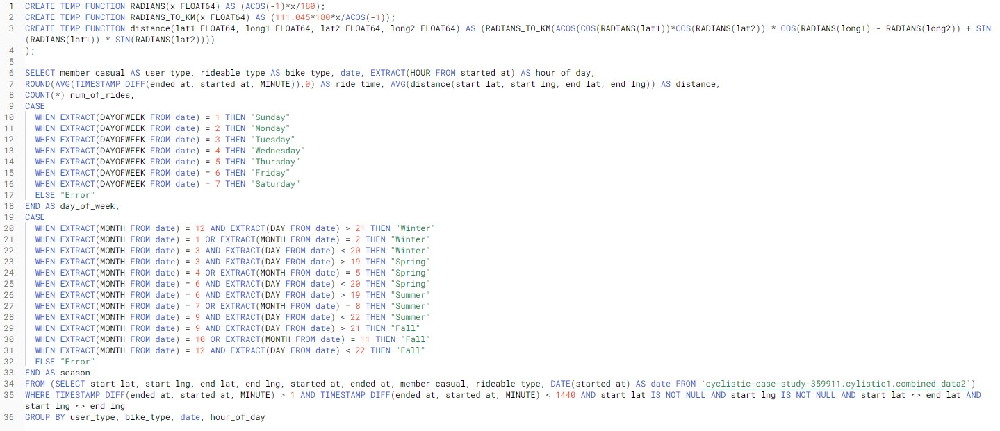
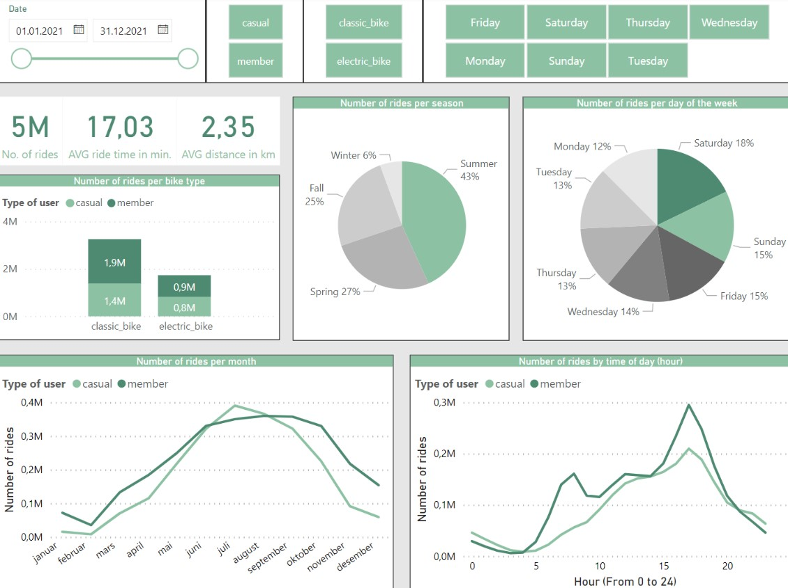
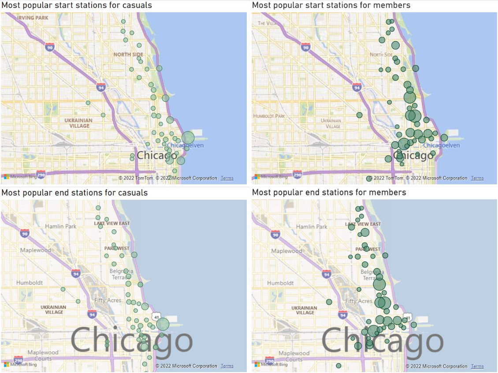

Prosjekt: Bysykkel
Introduksjon
Som en del av Google sin Data Analytics Professional Certificate jobbet jeg med et case hvor man skal se på en problemstilling for et fiktivt selskap som leier ut bysykler i Chicago. Selskapet heter Cyclistic, og forretningsmodellen går ut på å leie ut over 5 800 sykler innenfor et nettverk av sykkelstasjoner over hele Chicago. Cyclistic tilbyr både enkeltbilleter, dagspass og årsmedlemskap. Kunder som kjøper enkeltbilletter eller dagspass vil her bli referert til som tilfeldige bruker eller "casual riders", mens brukere med årsmedlemskap vil jeg referere til som medlemmer eller "members".
Utgangspunktet for caset er at Cyclistic har konkludert med at medlemmer er mer lønnsomme enn casual riders. Markedsdirektøren mener derfor at selskapets fremtidige suksess avhenger av å maksimere antallet årsmedlemskap. Hun har derfor satt seg et klart mål: å utforme markedsstrategier rettet mot å få tilfeldige brukere til å bli med medlemmer. Det er tre spørsmål som vil legge til grunn for de nye markedsstrategiene:
1. På hvilke måter bruker medlemmer og tilfeldige brukere Cyclistic forskjellig?
2. Hvorfor ville tilfeldige brukere kjøpt årsmedlemskap i Cyclistic?
3. Hvordan kan Cyclistic bruke digitale medier til å påvirke tilfeldige brukere til å bli medlemmer?
Vårt oppdrag er å svare på det første spørsmålet og til å produsere en rapport med følgende innhold:
1. En beskrivelse av forretningsoppgaven vi forsøker å løse
2. En beskrivelse av alle datakilder so brukes
3. Dokumentasjon av eventuell behandling og manipulering av dataen
4. Et sammendrag av analysen
5. Visualiseringer som støtter opp under analysen og viktige funn
6. Endringsforslag basert på analysen
Forretningsoppgaven
Vår forretningsoppgave er å forstå på hvilke måter medlemmer og tilfeldige brukere Cyclistic forskjellig, slik at vi kan utarbeide forslag på hvordan tilfeldige brukere kan bli gjort om til medlemmer.
Datakilder og databehandling
I dette caset vil jeg bruke brukerdata fra januar til desember 2021. Hvert datasett er i csv-format og består av data av alle turene som har blitt gjennomført av våre brukere i denne perioden. Jeg skal bruke Excel og SQL til å behandle og analysere dataen, mens jeg bruker Power BI til å visualisere resultatet. Før jeg starter med dette, så er det noen begrensninger i dataen som vi må være klare over. "Classic bikes" eller klassiske sykler ble tidligere kalt for "docked bikes" eller stasjonssykler og referer til det samme. Turer med ordinære sykler startes og avsluttes alltid ved en sykkelstasjon. Elsykler derimot har en sykkellås, noe som lar brukere parkere dem hvor som helst i nærheten av en sykkelstasjon. Dataen skal heller ikke inneholde turer som er kortere enn ett minutt eller lenger enn en dag. Eventuelle turer som ikke oppfyller disse begrensningene er sannsynligvis ikke kundedata, men tester eller vedlikeholdsarbeid utført av Cyclistic. Disse syklene kan også bli stjålet. Denne dataen bør derfor fjernes.
Databehandling
For å behandle dataen brukte jeg SQL. Først opprettet jeg et datasett og importerte alle 12 csv-filer, én for hver måned, som separate tabeller. Deretter kombinerte jeg disse ved å bruke UNION ALL-kommandoen. Den nye tabellen har nå totalt 5 595 063 rader. Det betyr at vi, før vi har startet å behandle dataen, nesten har 5,6 millioner registrertesykkelturer i 2021. Den nye tabellen inneholder kolonnene vist på bildet til høyre. Etter å ha gjort meg kjent med dataen og kjørt noen spørringer, trakk jeg følgende konklusjoner:
1. Ride_id er en primærnøkkel (primary key) som kun består av unike verdier og hvor hver streng består av 16 tegn.
2. Rideable_type består av tre forskjellige typer sykler: den klassike sykkelen, elsykkelen og stasjonssykkelen. Siden den ordinære og stasjonssykkelen refereren til samme type sykkel, vil jeg gjøre om alle "stasjonssykler" til ordinære sykler eller “classic bikes” ved hjelp av REPLACE-funksjonen.
3. Started_at og ended_at refererer til datoen og tidspunktet sykkelturen ble startet eller avsluttet. Jeg la til en kolonne med turens lengde i minutter, ved hjelp av TIMESTAMP_DIFF-funksjonen. Etter det filtrerte jeg simpelthen ut alle turene på under ett minutt eller over 1440 (et døgn).
4. Start_station_name og end_station_nameer navnene på alle stasjonene. Siden ordinære sykler må ha en start- og endestasjon, så fjerner jeg alle radene hvor noen av disse verdiene mangler ved hjelp av DELETE-funksjonen. Foe elsykler, så endrer jeg simpelthen alle null-verdiene til sykkellås eller "Bike Lock". Jeg fjerner også alle unødvendige mellomrom ved hjelp av TRIM-funksjonen.
5. Start_station_id og end_station_id består av verdier med forskjellige strenglengder og ettersom jeg anser de som irrelevant for analysen, ignorer jeg ddisse kolonnene.
6. Start_lat, start_lng, end_lat og end_lng viser til koordinatene av start og ende-lokasjonene for hver sykkeltur. Jeg fjernet alle turene med nullverdier i disse kolonnene.
7. Member_casual viser til om denne sykkelturen ble gjennomført av et medlem eller en tilfeldig bruker.
Analysesammendrag
Etter å ha behandlet dataen, så er det en god ting å ta et skritt tilbake og minne seg selv på spørsmålet vi forsøker å besvare: "På hvilken måte bruker medlemmer og tilfeldige brukere Cyclistic forskjellig?» For å kunne svare på det bør spørringen vår derfor inneholde informasjon som kan avdekke eventuelle brukerforskjeller mellom disse gruppene. Et interessant aspekt å se på i den sammenhengen er når Cyclistic brukes gjennom året, gjennom en uke og ejnnom et døgn. For å se på det velger jeg å inkludere en dato-, dag- og time-kolonne i spørringen min. I tillegg lager jeg en "sesong"-kolonne. En viktig ting å huske på er at disse kolonnene er hentet fra "started_at"-kolonnen. Hele spørringen jeg lastet opp til Power BI inneholdt 34 000 rader og så slik ut:
For å holde spørringen relativt liten og enkel, valgte jeg å gjøre separate spørringer for å trekke ut geodataen og visualisere denne. Jeg så da kun på de 50 mest populære start- og endestasjonene for både medlemmer og tilfeldige brukere.
Visualisering og nøkkelfunn
Jeg startet med å se litt på de viktigste tallene. Etter å ha behandlet dataen satt jeg igjen med rundt 5 millioner registrerte sykkelturer i 2021: 2,8 millioner registrert av medlemmer og 2,2 millioner registrert av tilfeldige brukere. Gjennomsnittlig lengde for én sykkeltur var på rundt 17 minutter. For medlemmer derimot, var det like under 13 minutter, og for tilfeldige brukere mer enn 21 minutter.
Det fikk meg til å lure på om tilfeldige brukere også sykler lenger. For å svare på det på det spørsmålet brukte jeg Haversine-formelen (se spørringen) for å beregne gjennomsnittlig avstand mellom hver start- og endestasjon. Dette vil ikke gi den faktiske distansen som er kjørt, men det gir oss en viss indikasjon på distansen på én gjennomsnittlig tur. Den viser at gjennomsnittlig avstand mellom start- og endestasjon er rundt 2,35 kilometer. For tilfeldige brukere er dette rundt 2,4 kilometer, for medlemmer 2,31 km.
Rundt 3,3 millioner turer ble gjennomført med en klassisk sykkel, mens 1,7 millioner turer ble gjennomført med en elsykkel. Elektriske sykler ser ut til å være litt mer populære blant tilfeldige brukere. Det er imidlertid én viktig ting å huske på; her ser vi på aggregerte data. Vår data bryter ikke ned historien for en gjennomsnittlig bruker. For eksempel kan et relativt lite antall medlemmer, som foretrekker den klassiske sykkelen, dra analysen i en bestemt retning dersom de bruker tjenesten mye og dermed registrerer mange turer. Det kan da se ut som et gjennomsnittlig medlem foretrekker klassiske sykler, mens dette kanskje ikke er tilfelle.
Linjediagrammet nederst til venstre på dashbordet viser antall turer per måned i 2021. Gjennom store deler av året blir de fleste sykkelturene gjennomført av medlemmer. Fra slutten av juni til august overstiger imidlertid tilfeldige brukere medlemmer i antall turer. Filtrerer vi etter «member» og «casual» og tar en titt på det sesongbaserte kakediagrammet midt midt på dashbordet ser det ut til at sommeren er en klar favoritt blant tilfeldige brukere. Faktisk så ble nesten halvparten (49 %) av alle sykkelturene registrert av tilfeldige brukere i løpet av sommeren. Blant medlemmene er dette tallet 38 prosent, og det ser ut til at medlemmene er mer opptatt av sykling året rundt.
Når vi ser på det andre kakediagrammet, legger vi merke til at lørdag og søndag er de dagene tilfeldige brukere bruker tjenesten mest. Blant denne brukergruppen ble faktisk hele 41% av alle sykkelturene i 2021 registrert på lørdag eller søndag. Det tilsvarende tallet blant medlemmer er 26%, og det viser seg at tirsdag til fredag er de mest populære dagene for tjenesten vår blant medlemmer. Hvis vi ser på linjediagrammet nederst til høyre og filtrerer vekk lørag og søndag, legger vi merke til et annet tydelig mønster. Medlemmer ser ut til å bruke tjenesten vår mest i løpet av to tidsperioder i døgnet: rundt 07.00 til 9.00 og 17.00 til 19.00. Faktisk så ble blir 25 prosent av alle sykkelturene blant medlemmer startet mellom 07.00 og 09.00. Denne tiden på døgnet er også mest populær blant tilfeldige brukere, men mønsteret er ikke like tydelig.
La oss til slutt ta en titt på geodataen vår. Jeg plottet de 50 mest populære start- og endestasjonene for både medlemmer og tilfeldige brukere i fire forskjellige kartdiagrammer. Resultatene er vist nedenfor, og om vi ser nøye etter, så kan vi se et mønster her. De mest populære stasjonene blant tilfeldige brukere finner vi langs kysten, mens medlemmer ser ut til å bevege seg mer i det som ser ut til å være urbane områder.
Sammendrag
Selv om det er for tidlig å trekke konklusjoner, så er det flere indikasjoner på at medlemmer og tilfeldige brukere bruker Cyclistic på ganske forskjellige måter. Det ser ut til at medlemmer bruker denne tjenesten til å komme seg rundt i hverdagen, og spesielt til å pendle mellom hjem og jobb. Tilfeldige brukere derimot bruker tjenesten mest på fritiden. Tilfeldige brukere bruker sykkelen lenger hver gang de bruker tjenesten, men de ser ikke ut til å tilbakelegge noen lengre distanse enn medlemmer gjør på sine turer. Jeg vil anta at tilfeldige brukere prøver å få mest mulig ut av tiden sin med sine enkeltbiletter og dagskort. I den forbindelse kunne det vært interessant å se på prisene for de ulike produktene. Uansett, så sykler tilfeldige brukere muligens ikke direkte fra A til B, og har det muligens ikke like travelt. Tilfeldige brukere bruker Cyclistic mest om sommeren og i helgene. De ser ut til å legge sine sykkelturer i større grad langs kystlinjen til Chicago, et område som er fullt av strender, parker og andre typer fritidsattraksjoner. Dette understreker mistanken om at denne brukergruppen bruker tjenesten i større grad på fritiden.
Medlemmer ser ut til å være mer opptatt av sykling på ukedager og året rundt. De bruker tjenesten mest i rushtiden, noe som kan indikere at de bruker tjenesten mest til å pendle til og fra jobb. Denne tanken styrkes av at de mest brukte stasjonene blant medlemmer er lokalisert i urbane områder. Vi må imidlertid igjen huske på at disse diagrammene viser et bilde på totalen, og bryter ikke ned bruken til et gjennomsnittlig medlem eller en en gjennomsnittlig tilfeldige bruker.
Forslag
Når vi tar et skritt tilbake igjen og minner oss selv på forretningsoppgaven, så tror jeg det er flere veier videre etter vår analyse.
Et alternativ er å foreta en enda dypere og grundigere analyse. For å avdekke relevante markedsføringsmuligheter kan vi samle inn mer relevant data og analysere det enda grundigere. Da kan vi også teste hypotesen om at medlemmer bruker tjenesten i stor grad til å pendle, mens tilfeldige brukere bruker den mest på fritiden. Gjør vi dette, så bør vi også redefinere forretningsoppgaven og stille oss selv noen spørsmål. Hva er det som gjør at medlemmer og tilfeldige brukere bruker tjenesten på forskjellige måter? Hva får de ut av opplevelsen og hva er viktig for hver av brukergruppene? Vi bør da ta sikte på å samle mer kvalitativ data (om brukermotivasjoner, rutiner etc.) og demografisk data, for eksempel gjennom forbrukerundersøkelser. For å understreke hvorfor demografisk data er så verdifullt, bør vi huske på at en brukers inntekt, adresse, alder og BMI er svært relevant for deres sykkelkapasitet og hvilket medlemskap de har råd til. Til slutt bør vi forsøke å avdekke mer konkrete forbindelser mellom forskjellige måter å bruke tjenesten på. Dette kan hjelpe oss med å avdekke store muligheter eller hindringer for å få tilfeldige brukere til å bli medlemmer. Ulempen med denne tilnærmingen er at det vil koste mer tid og ressurser før vi kan sette i gang tiltak, mens fordelen er at risikoen for å sette inn feil tiltak vil bli mindre med en en grundigere forståelse av situasjonen.
Et annet alternativ er å sette i gang tiltak uten videre analyse. Vi kan bruke konklusjonene fra denne analysen til å danne grunnlaget for Cyclistic sin markedsstrategi til å få tilfeldige brukere til å bli medlemmer. Velger vi dette alternativet, blir neste steg å vurdere hvilke tiltak som bør vurderes. Vi bør da ha fokus på faktorer som påvirker tilfeldige brukere sin betalingsvillighet. Vi for eksempel vurdere å innføre et helge- eller sesongpass, noe som gir muligheter for ubgrenset bruk av tjenesten i en definert periode. Vi kan også fokusere på å formidle et budskap som gjør det mer interessant for tilfeldige brukere å velge et årsmedlemskap. Vi kan si at ved å bruke Cyclistic daglig sparer du en x antall kroner på bensin/diesel, du forbrenner en x mengde kalorier eller du sparer planeten for en x mengde co2. Vi kan også vurdere en prismodell der et "premium"-medlemskap gir ekstra privilegier for medlemmer er villige til å betale litt ekstra. Ett privilegium kan være å ha mulighet til å reservere en sykkel når etterspørselen er høyest, for eksempel i rushtiden. Dette vil tilføre ekstra verdi gjennom økt forutsigbarhet for de som pendler til og fra jobb. Uansett hvordan vi velger å gå videre, må vi huske på at en økning i antall medlemskap sannsynligvis også vil øke kostnadene våre gjennom. Jeg vil derfor anbefale å gjennomføre en nytte-kostnadsanalyse uavhengig av hvilke tiltak vi vil vurdere å sette i gang med.